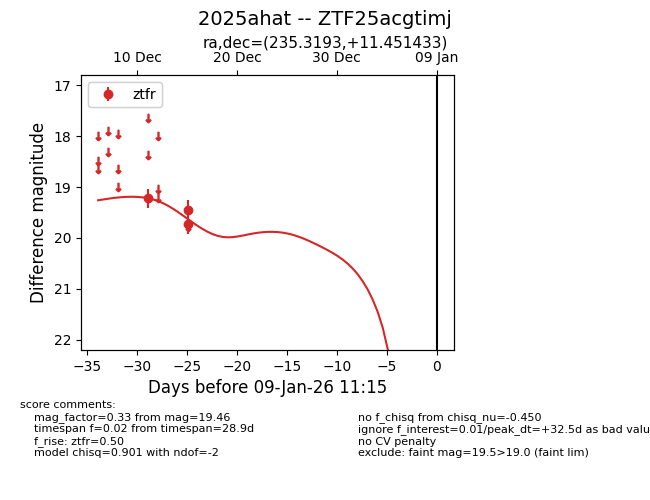
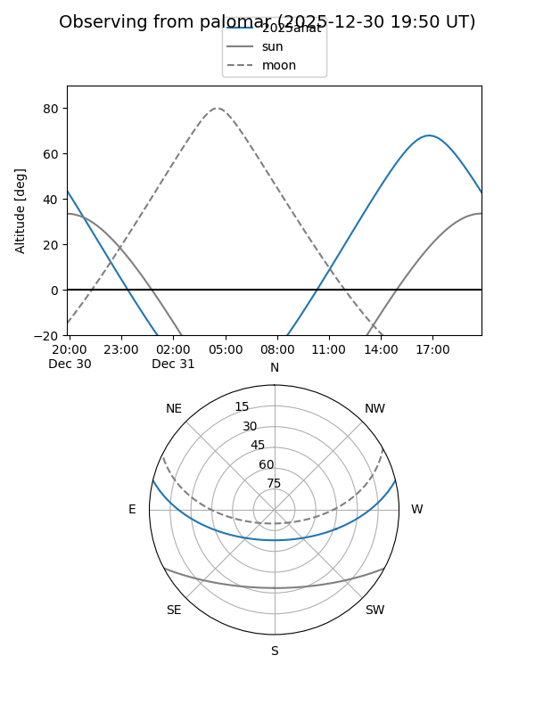

2025ahat
Target 2025ahat at 2026-01-09 12:49
Aliases and brokers:
FINK: link
Lasair: link
ALeRCE: link
TNS: link
YSE: link
alt names
ZTF25acgtimj (ztf,fink_ztf)
2025ahat (tns,yse)
Coordinates:
equatorial (ra, dec) = 235.3193,+11.45143
equatorial (HMS+DMS) = 15:41:16.63,+11:27:05.16
galactic (l, b) = (19.9106,+47.22691)
Flags:
Photometry:
last ztfr=19.46
3 ztfr detections
Lightcurve

Visibility


Additional plots